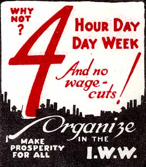

Importance of French Workers' Struggle to Keep 35 Hour Week Shouldn't be Underestimated
By Richard Mellor - Labor's Militant Voice, Wednesday, Feb. 16, 2005.
The meaning of freedom means different things to different people. Cromwell wasn't championing the cause of freedom for the English peasants and certainly not the Irish ones. Ancient Greece was a democracy, a slave owners' democracy, and the European's who fled tyranny in their world, ended freedom for the inhabitants of the lands they colonized.
There is a major struggle going on in France about freedom; freedom to work longer hours or have more leisure time. Here in the U.S, there has been a somewhat successful attempt by U.S. capitalism to promote anti-French sentiment. After September 11th, French wine was poured down the drain, French food has been ridiculed, and the most insulting of all, French Fries were renamed Freedom Fries. Much of this anti-Gallic sentiment has subsided somewhat but U.S. capitalism's efforts to introduce more freedom to Europe and most especially, France, are gaining momentum; they're getting more support from their class brethren over there. Reading the debates in the serious bourgeois press about the workweek in France is a lesson in social science that reveals the class nature of society in a clear and precise way. In these publications the capitalist class talk to each other. The intent is not to obscure reality but to clarify it, not to divide the reading audience against itself but to unite them.
 Marxism argues that ideas have a material base. In the last analysis it is objective reality that determines consciousness. As Marx explained, "It is not the consciousness of men that determines their being, but on the contrary it is their social being that determines their consciousness." This is not to mean that what we think is not affected by other factors. Most workers will argue that the prices of products will certainly rise if wages rise, which is not the case as wages and prices are not organically linked. Most workers use the expression; eight hours pay for eight hours work, an impossible idea in a market economy. These ideas that we express are ideas that the ruling class introduce to society through their institutions, the church, the education system, the media, and the trade union leaders echo them. They do this in the same way that the Kings and Queens and the organized church convinced people that they were rulers by divine right; it was God's will. They are meant to obscure the real class forces at work in society.
Marxism argues that ideas have a material base. In the last analysis it is objective reality that determines consciousness. As Marx explained, "It is not the consciousness of men that determines their being, but on the contrary it is their social being that determines their consciousness." This is not to mean that what we think is not affected by other factors. Most workers will argue that the prices of products will certainly rise if wages rise, which is not the case as wages and prices are not organically linked. Most workers use the expression; eight hours pay for eight hours work, an impossible idea in a market economy. These ideas that we express are ideas that the ruling class introduce to society through their institutions, the church, the education system, the media, and the trade union leaders echo them. They do this in the same way that the Kings and Queens and the organized church convinced people that they were rulers by divine right; it was God's will. They are meant to obscure the real class forces at work in society.
There is a major struggle going on in France between two points of view. The working class in France has a 35-hour workweek and the French workers like it. According to the Financial Times, in a recent poll 77% of respondents said, "they liked their new lifestyles and did not want to work longer hours. Many also believed that by reducing their working hours they are doing their bit for social solidarity." Those pesky French workers. Social solidarity? What about "our" freedom scream the capitalists in chorus. The problem with the French, the Times points out, is that they "have not worked as hard as the Americans." This is the reason for the weaker economy. France is suffering a "work deficit". Sure, says the Times, they're happier, they're well educated, productive, even fairly dedicated, and the amount of strike days lost to industrial disputes in France is lower than most industrial countries, but they work 15% fewer hours a year than their American counterparts. The French capitalist class wants to introduce more freedom and allow French workers to work longer hours so they can earn more money.
The French bosses want their workers to be more like the Americans and work longer hours. The 35-hour workweek is destroying the quality of life. One bourgeois economist is appalled, "They are offered more leisure time with no sacrifice on the income side". In other words, workers are getting freedoms that are normally reserved for capitalists, pay for not working. Reducing working hours with no subsequent loss in pay cuts in to the boss's income, his profits. In the case of France though, workers themselves are actually paying as the state has provided "fiscal concessions" to companies so that wages didn't drop when the 35-hour week was introduced. The real problem is not the cost at this point but that the French workers' insistence on a 35-hour workweek is a problem for U.S. and global capitalism that is intent on normalizing going backwards.
This battle over working hours is the struggle between workers and bosses over surplus value. Working time can be divided in to two periods. Firstly, there is the time spent producing the value of our own subsistence, what it takes to feed ourselves, our kids and remain healthy enough to get up the next morning. Obviously, this is different in different times and locations and is influenced by the class struggle. This is called necessary labor time. But we don't go home or quit working when we produce the value of our wages. We continue working. In today's modern economy we may produce the value of our own subsistence in 20 0r 25 hours or even less.
The period that we work above that which produces the value of our own subsistence we can refer to as unnecessary labor time and the value produced in this period is surplus value, it is value that the boss doesn't pay for and is the source of his profit. Hence the ferocity with which the capitalist resists lowering working hours. It's the struggle over surplus value. We decrease the unnecessary labor time with no decrease in wages and they lose income. They extend the working day like they want to in France, and they increase the production of surplus value and their profit. But they can't say this of course because it undermines the argument that you can give a fair day's work in return for a fair days pay".
The introduction of the 35-hour week was "no picnic, I can tell you", says Pierre Moustial CEO of Fournier Pharmaceutical. Pierre supports changes in the 35-hour workweek, "The government aims to let people work more to earn more. I think it is difficult for anyone to be against that goal." he adds. Pierre is being a bit dishonest here. He knows from experience that the real goal is to work less and earn more; he just doesn't think that should apply to workers. Those workers that support the right to work longer hours are not doing so because they like working longer hours, we all know that. The employers are using all sorts of ways to make it difficult to survive on the 35.hour week and are attacking other benefits won by the French workers.
The attacks on the French working class in the British media were also severe during some of the trucking and public sector strikes a few years ago. But we should be more like the French not less. Our Union officials should be leading a movement here for reduced hours and building links with the French instead of championing employers' rights like they do. After all, as one French backer of the law put it, "society's contentment cannot just be measured in a GDP index" Martine Aubrey, who introduced the law, a law which, incidentally, has a greater effect on women than men, defended the 35-hour week saying, "If we are on the left it is because we hope that every man and woman finds in their work not only a source of income but also a means of creating social value and that they can clear time for leisure and their families."
The bosses, are being partially successful in their efforts to lengthen the workweek. The struggle over the 35-hour week in France and the employers' efforts to turn it back after only a few years shows what will be necessary to win any serious reduction of working hours. But turning it back may not be a quiet affair even with the help of the politicians of the left, "I think we should go further, cutting it to 32 hours", says Jean-Christophe Tirat, a croupier and shop steward in a Paris Casino, "Work is not there to make life completely unbearable: one should not dominate the other." This view of the world is not a commonly held one with workers' in the U.S. who eat breakfast on the run and take their one or two week vacations up at the lake. It should come as no surprise that only 16% of U.S. workers have passports; they don't have enough leisure time to go anywhere. But in the last analysis it will only be our control over the labor process itself that will bring use the leisure time we need to develop our true human potential and open the door to freedom in the real sense.
This article and its contents are the product of the publisher, and their opinions do not necessarily reflect those of the IWW. It's included here for information purposes only.